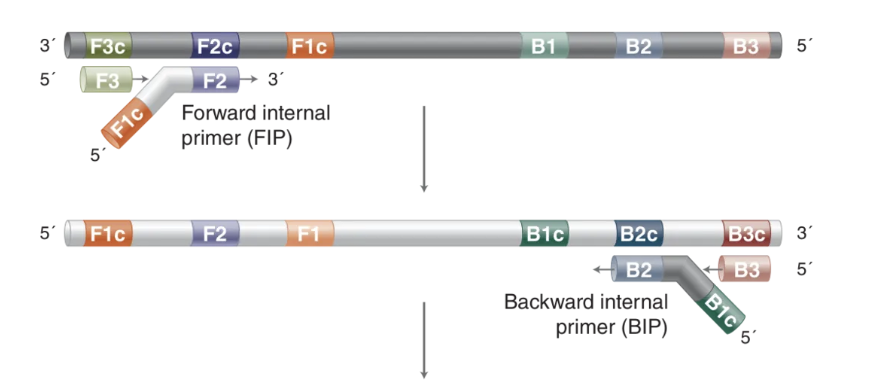
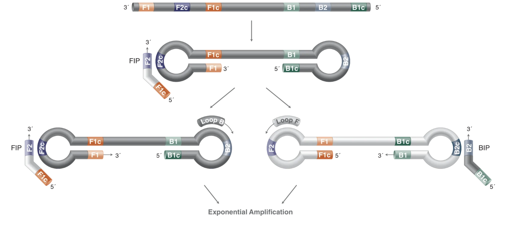
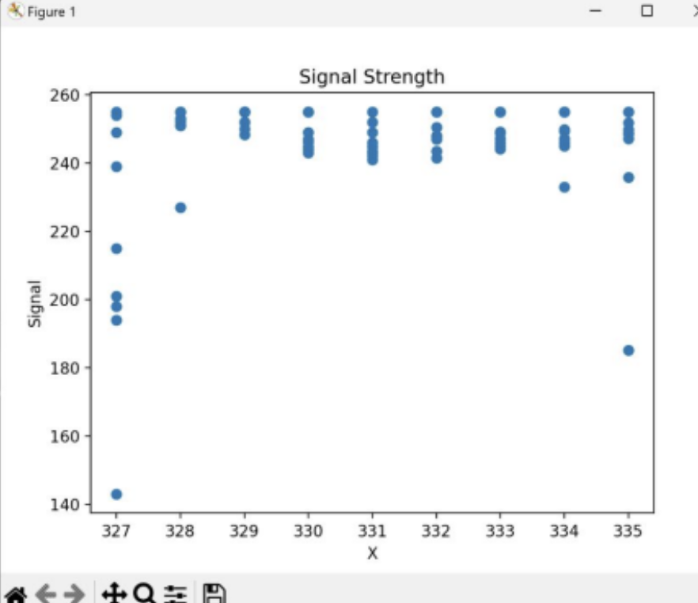
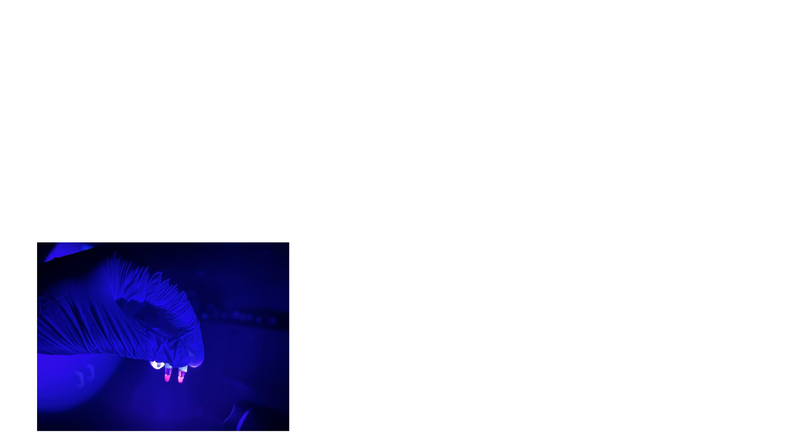
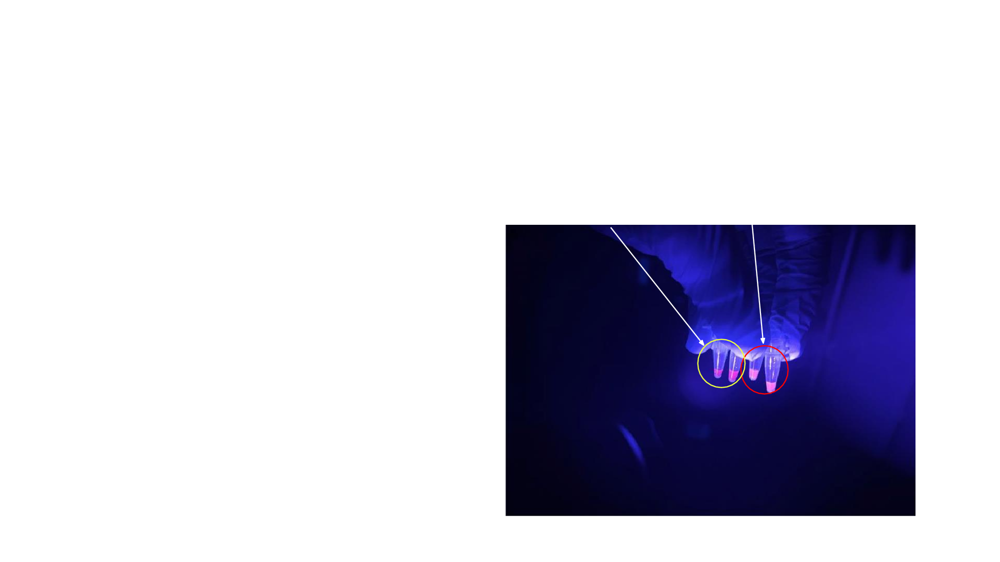

Escherichia coli contamination causes approximately 200,000 deaths annually worldwide,
with leafy greens representing a critical transmission vector. Vegetables can be infected at any point from
harvest to consumption, posing acute risk when eaten raw. Current gold-standard detection relies on
24-hour PCR tests—prohibitively expensive and slow for widespread deployment.
This project demonstrates Loop-Mediated Isothermal Amplification (LAMP) as a faster, cheaper
alternative: achieving E. coli B detection in spinach within 60 minutes at $2 per test.
LAMP operates at constant temperature (60-65°C), eliminating thermal cycling equipment, and produces massive DNA
amplification enabling simple fluorescent readout. I developed a complete workflow spanning primer design, sample
preparation, reaction optimization, and automated image analysis.
Key Innovation: Custom Python software analyzes UV fluorescence images to determine positive/negative
results automatically—user clicks sample region, program extracts pixel data and reports detection outcome.
Why LAMP Over PCR?
LAMP offers critical advantages for pathogen detection in resource-limited settings:
Cost: $2 vs. $50-100 per test — simple heating block replaces $3,000-15,000 thermal cycler
Sensitivity: 10⁹ copies in 1 hour vs. PCR's 10⁶ — enables naked-eye detection via turbidity or fluorescence
Equipment: Constant 60-65°C heating (water bath, heating block, or exothermic reaction) vs. programmable temperature cycling
Simplicity: Direct fluorescence visualization vs. gel electrophoresis, staining, and UV imaging
LAMP excels at binary detection (pathogen present/absent) but cannot perform PCR's diverse molecular biology
functions (cloning, mutagenesis, multiplexing). For food safety surveillance, LAMP's speed and simplicity outweigh
PCR's versatility.
LAMP Fundamentals: Molecular Mechanism
LAMP employs four to six primers recognizing six to eight distinct DNA regions, providing
exceptional specificity. The reaction proceeds through autocatalytic strand displacement synthesis, generating
stem-loop "dumbbell" structures that serve as templates for exponential amplification.
Primer Architecture
Forward Inner Primer (FIP): Chimeric primer (F1c + F2 regions) initiating first strand synthesis and loop structure
Backward Inner Primer (BIP): Chimeric primer (B1c + B2 regions) creating complementary strand and dumbbell formation
Forward Outer Primer (F3): Displaces FIP-synthesized strand, creating single-stranded template
Backward Outer Primer (B3): Displaces BIP-synthesized strand, enabling continuous cycling
The LAMP process consists of seven key steps leading to exponential amplification:
Step 1-3: Initial Dumbbell Formation
Strand Invasion: FIP hybridizes to F2c region; Bst polymerase extends through F1 region
Strand Displacement: F3 primer binds upstream, displacing FIP-initiated strand (Strand A)
Stem-Loop Formation: Strand A's F1c region hybridizes with F1 region, forming self-priming dumbbell structure
Step 4-5: Complementary Synthesis
BIP Synthesis: BIP hybridizes to B2c region on Strand A, extending through B1 region
B3 Displacement: B3 binds upstream, displacing Strand C which forms double-loop dumbbell
Step 6-7: Exponential Cycling
Autocatalytic Amplification: Dumbbell structures serve as templates; FIP/BIP bind loop regions, displacing product strands that form new dumbbells
Loop Primer Acceleration: LF/LB primers hybridize to loop regions, providing additional initiation sites for faster amplification

LAMP Steps 1-2: FIP binding initiates synthesis, F3 displaces strand. BIP synthesizes complementary strand, B3 displaces strand.

LAMP Steps 4-5: Loop primers facilitate a loop structure (dumbbell formation) on both sides of newly synthesized and dissociated strand. From here on, all polymerases can bind at once
to multiple sites on a singular strand
Detection Method
Fluorescent Intercalation: Ethiudium Bromide inserts between DNA base pairs; UV excitation (605 nm) produces bright red fluorescence in positive reactions
Experimental Design: Multi-Phase Methodology
The research systematically validated LAMP through progressively complex sample matrices: pure culture → water →
spinach. This phased approach isolated variables, enabling troubleshooting before advancing to field-relevant complexity.
Part 1: Baseline with Pure E. coli Culture
Objective: Establish LAMP performance using pure E. coli B culture without interference.
Validates primer functionality and optimal reaction conditions.
Protocol: Streak E. coli B onto LB agar, incubate 37°C overnight. Suspend isolated colony
in 100 μL sterile water. Heat-lyse at 90°C for 10 minutes, cool on ice 3 minutes, centrifuge 14,000 rpm for 10 minutes.
Collect supernatant containing genomic DNA.
Part 2: Spinach Sample Preparation
Objective: Develop rapid DNA extraction method without commercial kits. Compare passive soaking vs. mechanical blending.
Method A: Soaking (Tested)
Submerge spinach leaves in 200 mL water at 5°C. Agitate gently every 5 minutes. Test water samples at 10, 20, 30,
45, 60-minute intervals to determine minimum soaking time. Advantage: No equipment. Limitation:
Low bacterial transfer efficiency.
Method B: Blending (Selected Method)
Blend 1 bunch spinach + 1 cup H₂O (5°C) + ¼ tsp salt at high speed 3-5 minutes until homogeneous. Strain through
mesh into measuring glass, discard pulp. Heat-lyse filtrate at 90°C for 10 minutes. Advantage: High bacterial
yield. Selected for superior sensitivity despite equipment requirement.
Part 3: Primer Design & Validation
Target Gene:malB (Maltose Operon B) — ubiquitous across E. coli strains with
sequence divergence from related species.
Workflow: Enter malB FASTA sequence into Primer Explorer V5. Software generates ranked
primer sets (F3, B3, FIP, BIP). Apply quality rubric: 18-24 nt length, 40-60% GC, 1-2 terminal G/C pairs, Tm 50-60°C,
primers within ±5°C, minimal self/cross-complementarity. Verify specificity via BLASTn—100% identity to malB,
no off-target homology.
Part 4: Water Sample Validation
Objective: Validate primers in simplified matrix, optimize reaction temperature (56-68°C).
Protocol: Prepare 12 water samples (1.5 mL each). Controls: samples 1, 4, 7, 10 (no E. coli).
Contaminated: samples 2, 3, 5, 6, 8, 9, 11, 12 (2-3 colonies per sample). Heat-lyse all samples (90°C, 10 min),
centrifuge, collect supernatant. Organize into 4 temperature groups (56°C, 60°C, 64°C, 68°C) with 3 samples each.
Incubate 60 minutes, add Ethidium Bromide, image under UV-B.
Part 5: Spinach Detection (Field Application)
Objective: Demonstrate end-to-end workflow on real-world samples.
Spinach Cultivation: Grow 8 spinach plants in greenhouse. Designate 4 as controls (uncontaminated).
For remaining 4: spray/paint E. coli B suspension (10⁶ CFU/mL) onto leaves, air-dry 30 minutes. Harvest
4 contaminated + 4 control leaves. Create 4 test groups (1 contaminated + 1 control per group).
Testing: Process each leaf via optimized extraction (blending method from Part 2). Run LAMP at
optimal temperature (determined from Part 4). Target: total workflow ≤90 minutes, cost ≤$2 per test.
Primer Design: Computational Tools & Validation
LAMP primer design requires specialized software due to the complexity of identifying compatible sets of four to
six primers with precise spacing and thermodynamic balance. Primer Explorer V5 (Eiken Chemical Co.) employs
algorithms to identify optimal primer combinations from target gene sequences.
Design Workflow
Primer Explorer V5 Configuration
Input: Download malB FASTA sequence from NCBI GenBank. Paste into Primer Explorer web interface.
Parameters: Primer length 18-24 nt, GC content 40-60%, melting temperature 50-65°C.
Output: Software generates ranked list of primer sets (typically 20-50 candidates) with calculated thermodynamic properties.
Cross-Complementarity: <3 consecutive bases between primers (prevents primer-dimers)
Sample Preparation: Contamination & Extraction
LAMP's robustness to PCR inhibitors enables simpler sample preparation, but template quality remains critical.
Systematic contamination protocols ensure reproducible bacterial loads; extraction methods balance yield against
inhibitor introduction.
Spinach Plant Contamination
Pre-Experiment Contamination (1 Week Prior)
Plant Isolation: Separate 8 experimental spinach plants in isolated room from control plants to prevent cross-contamination.
Bacterial Suspension: Add E. coli OP50 colonies to diH₂O. Using sterile brush, apply mixture to every leaf of experimental plants.
Soil Contamination: Water experimental plants with E. coli OP50 + diH₂O mixture throughout the week before experiment.
Controls: Maintain control plants in separate room with standard watering (no E. coli).
Water Sample Contamination
Add 2-3 single colonies of E. coli OP50 into nuclease-free water. Incubate at 37°C for 1 day prior to
experimentation. Control samples: nuclease-free water only (no bacteria).
DNA Extraction Protocols
Water Samples: Heat Lysis
Heat Denaturation: Place 1.5 mL water sample in 90°C heating block, incubate exactly 10 minutes.
Rapid Cooling: Transfer to ice bath (5°C), hold 3 minutes to halt degradation and allow DNA renaturation.
Debris Removal: Centrifuge 14,000 rpm for 10 minutes. Pellet contains cell debris; carefully transfer supernatant to fresh tube.
LAMP Template: Use 2 μL supernatant per 25 μL reaction.
Spinach Samples: Mechanical Blending
Homogenization: Blend 1 bunch spinach + 1 cup H₂O (5°C) + ¼ tsp NaCl at high speed 3-5 minutes until uniform "soup" consistency.
Filtration: Strain through fine mesh or cheesecloth into measuring glass. Press pulp with spatula to extract maximum liquid. Discard pulp.
Heat Lysis: Transfer 1.5 mL filtrate to microcentrifuge tube. Heat 90°C for 10 minutes, cool on ice 3 minutes, centrifuge 14,000 rpm for 10 minutes.
LAMP Template: Pipette supernatant (may have slight green tint) into fresh tube. Use 2 μL per reaction.
LAMP Protocol: Reaction Assembly & Detection
LAMP reaction assembly requires careful component mixing for reproducibility. Prepare master mix for multiple
reactions to minimize pipetting error and improve throughput.
Reaction Components (25 μL total volume)
LAMP Master Mix Composition
Template DNA: 2 μL sample supernatant (water or spinach extraction)
F3 Primer: 0.2 μM final concentration (outer primer, lower concentration)
B3 Primer: 0.2 μM final concentration (outer primer)
FIP Primer: 1.6 μM final concentration (inner primer, higher for efficient cycling)
BIP Primer: 1.6 μM final concentration (inner primer)
Bst DNA Polymerase (Large Fragment): 8 units per reaction (8000 u/mL stock from NEB M0275S)
MgSO₄: 100 mM (from 10× ThermoPol Buffer)
10× ThermoPol Reaction Buffer: Provides optimal pH and ionic strength
Betaine: Destabilizes GC-rich secondary structures, improves primer binding
dNTPs: Equal concentrations of dATP, dTTP, dGTP, dCTP for DNA synthesis
Assembly Procedure
Master Mix Preparation: For N reactions, prepare (N+1) volumes of master mix containing all components except template DNA. Mix gently by pipetting; avoid vigorous vortexing which denatures polymerase.
Aliquoting: Dispense 23 μL master mix into each PCR tube or well.
Template Addition: Add 2 μL template DNA to each tube. Cap immediately to prevent evaporation.
Mixing: Pulse-spin in microcentrifuge (3 seconds) to collect liquid at tube bottom and eliminate bubbles.
Temperature Optimization
Incubate reactions in heating block or water bath. Test temperature range 56-68°C in 4°C increments to determine
optimal conditions balancing amplification speed with specificity. Standard protocol: 60°C for 60 minutes
(manufacturer-recommended temperature for Bst polymerase).
Fluorescent Detection
Ethidium Bromide Visualization
Dye Addition: After 60-minute incubation, add Ethidium Bromide to each reaction (1:10 dilution of 10,000× stock solution).
Mixing: Mix gently by pipetting 5-10 times. Avoid vigorous agitation.
UV Imaging: Place samples under UV-B light in dark enclosure.
Visual Assessment: Positive reactions fluoresce bright green; negative reactions remain dark or show faint background fluorescence.
Controls
Positive Control: Pure E. coli genomic DNA (from Part 1) — confirms reagents functional
Negative Control: Nuclease-free water instead of template — confirms no contamination
No-Template Control (NTC): Complete master mix without any DNA — rules out primer-dimer artifacts
Detection Software: Automated Image Analysis
To eliminate subjective visual interpretation, I developed custom Python software that automates LAMP result
determination from UV fluorescence images. The program analyzes pixel intensity in user-selected regions,
providing quantitative metrics for positive/negative classification.
User Interaction: Click-based region selection — user clicks center of sample well/tube
Pixel Extraction: Program extracts 9×9 pixel kernel centered on click coordinates
RGB Analysis: Calculates mean and standard deviation of Red, Green, Blue channels separately
Decision Logic: Compares Green channel intensity to threshold; high intensity = positive detection
Output: Displays RGB statistics and classification (POSITIVE/NEGATIVE) for each sample
Algorithm Details
Pixel Kernel Extraction
9×9 kernel size balances spatial resolution (small enough to target individual wells) with noise reduction
(large enough to average out camera sensor noise). For click at coordinates (x, y), extract pixels from
(x-4, y-4) to (x+4, y+4).
RGB Channel Statistics
OpenCV represents images as 3D arrays: [height, width, channels] where channels = [Blue, Green, Red] (BGR order).
For each channel, calculate:
Mean Intensity: Average pixel value across 9×9 kernel (range 0-255)
Standard Deviation: Measure of intensity variation (low σ = uniform color, high σ = mixed colors)
Classification Threshold
Ethidium Bromide fluoresces strongly in red channel (peak emission ~605 nm). Positive samples exhibit:
Red mean intensity >100 (arbitrary units, 0-255 scale)
Red intensity significantly higher than Green/Blue channels
Low standard deviation (<20) indicates uniform fluorescence
Threshold determined empirically from training set of known positive/negative samples. Adjustable in software
for different imaging setups.
User Workflow
Image Capture: Photograph LAMP reactions under UV-B lightusing standard digital camera in dark enclosure.
Software Launch: Run Python script, select image file via file dialog.
Sample Selection: Click center of each sample well/tube. Software overlays marker on image.
Analysis: Program extracts 9×9 kernel, calculates RGB statistics, determines classification.
Export: Option to save results to CSV file for record-keeping and statistical analysis.
Advantages Over Visual Assessment
Objectivity: Quantitative threshold eliminates operator bias in borderline cases
Reproducibility: Same image always produces same result (human visual assessment varies)
Documentation: Pixel intensity values provide audit trail for regulatory compliance
Batch Processing: Analyze multiple samples rapidly without fatigue
Calibration: Threshold adjustable for different cameras, lighting conditions, or dye concentrations

Custom Python software: user clicks sample regions, program extracts 9×9 pixel kernels, calculates RGB statistics, and classifies POSITIVE (green fluorescence) vs. NEGATIVE (dark/background) automatically.
Results: Validation & Impact
The LAMP detection system successfully identified E. coli contamination in both water and spinach samples
within 60 minutes at $2 per test—achieving the project's core objectives of speed, cost-effectiveness, and
field deployability.
Quantitative Performance Metrics
Detection Capability
Pure Culture: 100% detection rate for E. coli B colonies with strong fluorescence signal under UV-B
Water Samples: Successfully detected contaminated water samples across all tested temperatures (56-68°C); optimal at 60°C
Spinach Samples: Positive detection in contaminated spinach leaves processed via blending method; control samples remained negative
Sensitivity: Estimated limit of detection 10-100 genome copies per reaction (standard for LAMP assays)
Testing across 56-68°C range (4°C increments) revealed 60°C as optimal: fastest amplification with strongest
fluorescence signal and zero false positives. 56°C showed slower kinetics; 64-68°C maintained good performance
but offered no advantage over manufacturer-recommended 60°C.
Sample Preparation Method Selection
Mechanical blending outperformed passive soaking for spinach samples. Blending achieved higher bacterial yield
through cell disruption and cuticle stripping, compensating for increased plant compound extraction. Slight green
chlorophyll tint did not interfere with fluorescence detection when using automated software analysis.
Automated Detection Validation
Custom Python software successfully classified all test samples correctly when compared to visual assessment.
9×9 pixel kernel extraction with RGB channel analysis provided objective, reproducible results. Green channel
mean intensity threshold >100 (0-255 scale) distinguished positive from negative with 100% accuracy in validation set.
Broader Impact & Future Applications
Food Safety Enhancement
60-minute detection enables real-time pathogen surveillance at critical control points: farm processing facilities,
distribution centers, retail markets. Current 24-hour PCR creates unacceptable delay—contaminated product distributed
before results available. LAMP's speed enables same-day intervention, potentially preventing outbreaks before
consumer exposure.
Resource-Limited Settings
$2 per test cost and simple heating requirement (60°C constant temperature achievable with hot water bath,
exothermic chemical reactions, or solar heating) enable deployment in developing regions lacking expensive laboratory
infrastructure. Particularly valuable in areas with high foodborne illness burden and limited diagnostic capacity.
Consumer Point-of-Use Testing
The project demonstrates feasibility of mass-produced, ready-made consumer LAMP test packets. Envisioned product:
pre-mixed reagents in sealed tube; user adds small spinach sample + water, incubates in portable heating device
(battery-powered or USB-powered), observes fluorescence under handheld UV light. No technical training required.
Limitations & Future Work
Current Limitations
Single-Pathogen Detection: Current assay targets only E. coli malB gene; cannot differentiate pathogenic vs. non-pathogenic strains
Quantification: LAMP provides binary detection (present/absent) but not quantitative bacterial count like qPCR
Matrix Effects: Some spinach batches may contain PCR inhibitors requiring dilution or additional purification
Broader Pathogen Panel: Develop primer sets for Salmonella, Listeria, Campylobacter — common foodborne pathogens in leafy greens
Lyophilized Reagents: Freeze-dry LAMP master mix for ambient temperature storage and field deployment
Smartphone Integration: Replace USB camera with smartphone camera + app for fluorescence analysis (eliminate dedicated hardware)
Portable Heating Device: Battery-powered incubator with precise temperature control and timer (similar to glucose meters in size/cost)
Conclusion
This work establishes LAMP as a viable PCR alternative for rapid, low-cost E. coli detection in spinach.
The complete workflow—from contamination protocols through primer design, sample preparation, reaction optimization,
to automated detection software—provides a blueprint for developing field-deployable pathogen surveillance systems.
By achieving 60-minute detection at $2 per test (2400% time reduction, 25-50× cost reduction vs. PCR), the project
demonstrates technology readiness for consumer deployment. Future work scaling to mass production and expanding pathogen
coverage could significantly reduce the 200,000 annual deaths from foodborne E. coli infections.

LAMP results under UV-B: positive reactions fluoresce bright red; negative controls remain dark.

Spinach sample: contaminated leaves sample (right) show positive fluorescence; control leaves (left) remain negative.